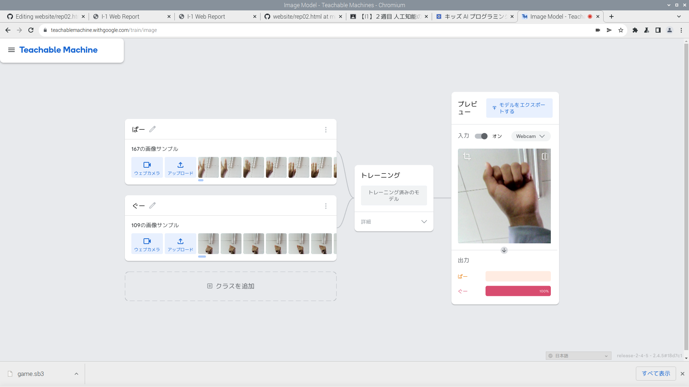

公大高専１年実習I-1レポート
３組６番 いちごごころ
第1週目
2-1 レポートをHTMLで作る
１週目のレポート
1.内容
レポートの書き方や画像の添付の仕方を教えてもらい、１週目のI1の実習の授業のレポートを作成した。
2.感想
レポートを作成する際に必要なGitHubの一部の使い方を理解することができた。また、画像を添付する際などで画像の名前を入力したりとファイル名がレポートなどを作成する際に重要になってくることがわかった。
2-2 機械学習体験

1.内容
手のパーの画像を150枚ぐらい撮り、グーの画像も150枚ぐらい撮ってそれらの画像を使って機械がパーかグーかを判断する機械学習（マシンラーニング）を体験した。
2.感想
機械学習の詳しい意味については難しくて理解できたのかが曖昧だったけれど、機械がグーかパーかを判断しているのがすごいと思った。また、機械学習を実際に体験できたので面白かった。